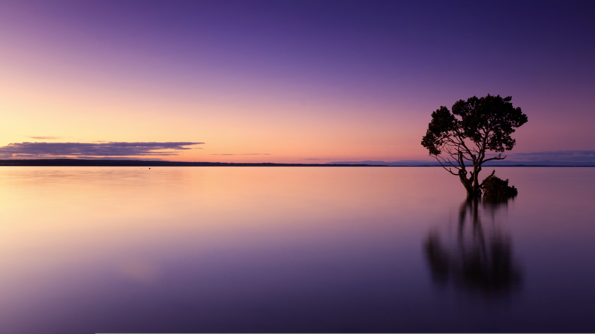

静かな雰囲気や夕日、水辺の景色が好きで、落ち着いたデザインに惹かれます。
学んだことを少しずつ形にしていくことを目標にしています。
| OS | Windows, Ubuntu など |
|---|---|
| Languages | HTML / CSS（基礎学習中） |
| Tool, MiddleWare | GitHub,VSCode |
| 資格・免許 | ITパスポート勉強中 |
モスバーガーやスーパーで働いていました
| 2023 年 | 学校法人角川ドワンゴ学園 ｓ高等学校 卒業 |
|---|---|
| 2025 年 | ZEN大学 |